generalized pca
theoretical basics
üìò schur decomposition
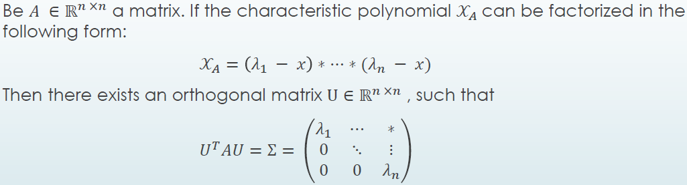
- diagonal elements of \Sigma = eigenvalues
- cols of U = eigenvectors
- if A is normal, equivalent to
eigendecomposition
üìò singular value decomposition
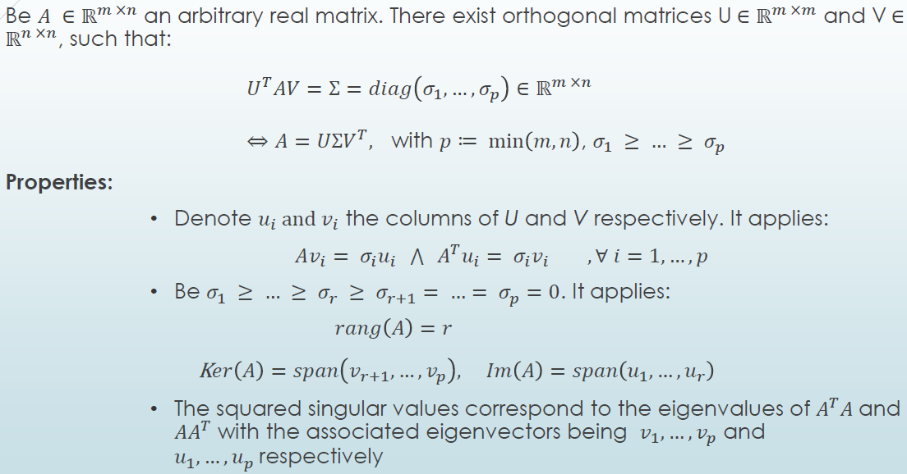
pca - complete data case
üéØ find low-dim linear subspace, preserving as much information ap
- optimal solution given by svd
principal components= d uncorrelated, linear components of demeaned x
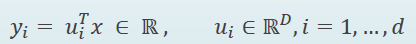- max var(y), s.t.

- find first principal component via 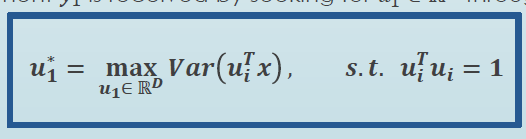 or, equivalently
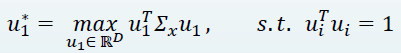
\Rightarrow \Sigma_x denotes cov matrix - for the next component, we exploit orthogonality of components, such that 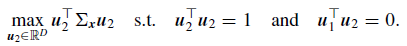
... and so on - solution via lagrangian multipliers \Rightarrow find all components simultaneously via maximizing
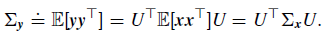 - in practice, we diagonlize sample cov
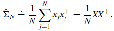
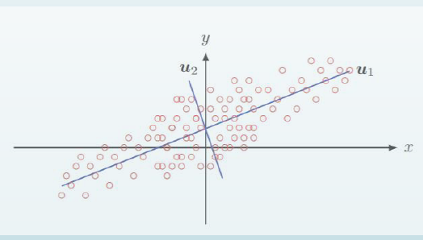
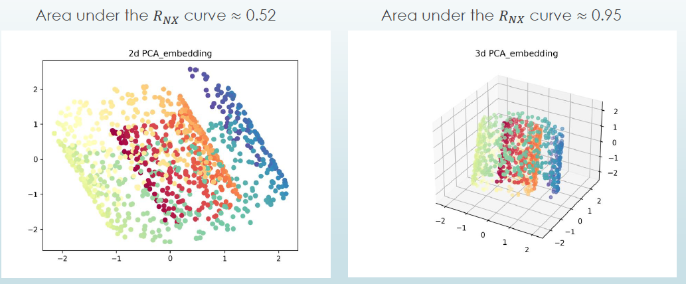
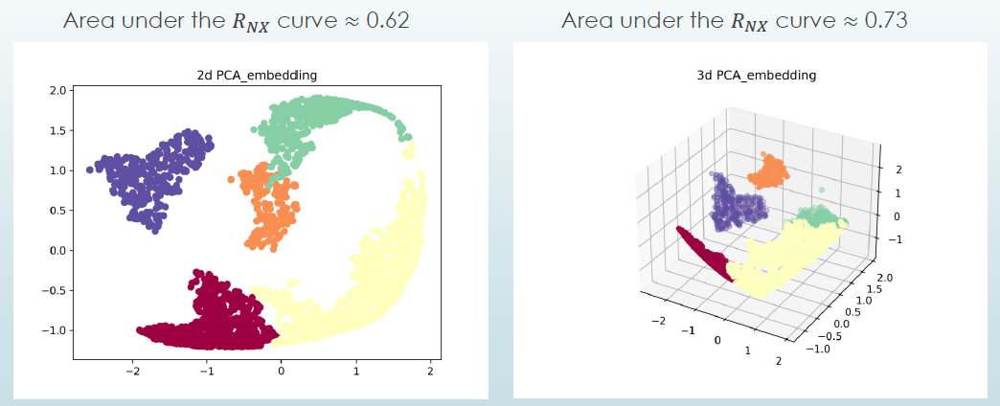
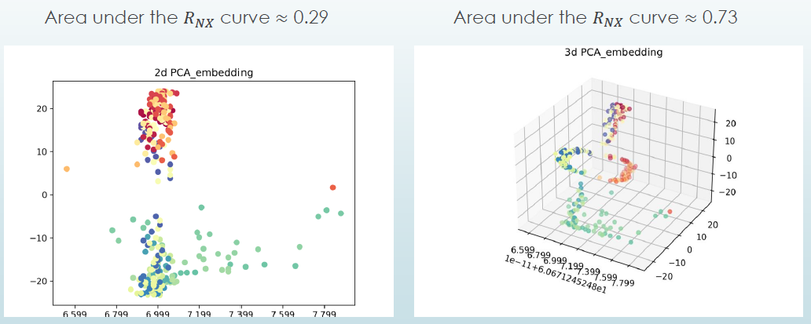
pca - incomplete data case
⚡ incomplete data, especially nmar
- standard pca not applicable to data with missing values
- standard imputation techniques available, but
- ⚡ mean imputation reduces overall variance
- ⚡ imputation by regression might distort marginal/joint distributions
- ⚡ additional uncertainty of imputation is not accounted for
pca is also interpretable as a fixed-effects model \Rightarrow bilinear model
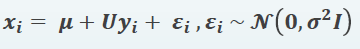
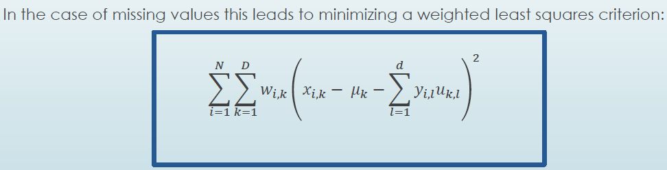
\Rightarrow No closed-form solution
\Rightarrow iterative algorithms
1️⃣ iterative pca
2️⃣ regularized iterative pca
3️⃣ nipals
iterative pca
-
focus on optimal estimation of principal components, not on best prediction for missing values
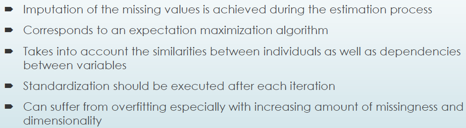 -
algorithm
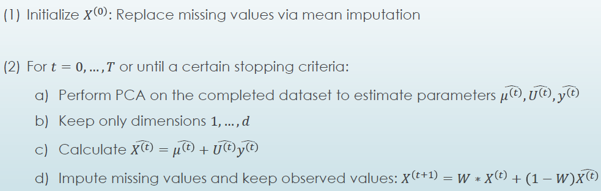
regularized iterative pca
- regularize \widehat{X^(t)} by penalizing large \widehat{y^(t)}
- shrinkage is proportional to the average size of eigenvalues d + 1, ... , D:
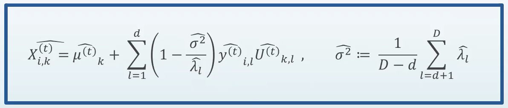
results
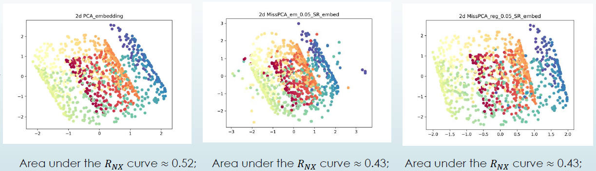
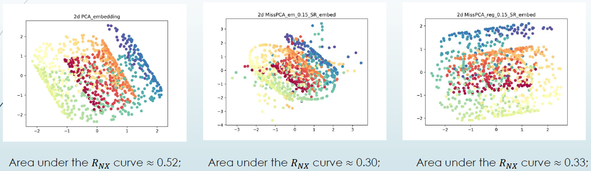
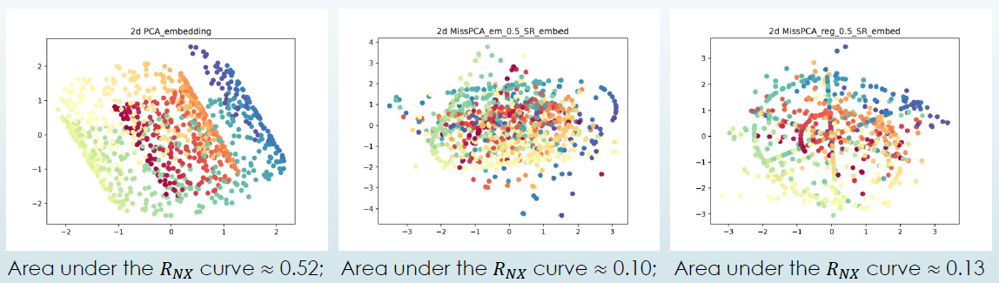
alternative: nipals
- üí° idea. treat pca as two complementary linear regression problems:
- 1️⃣ fix components and find loadings
- 2️⃣ fix loadings and find components
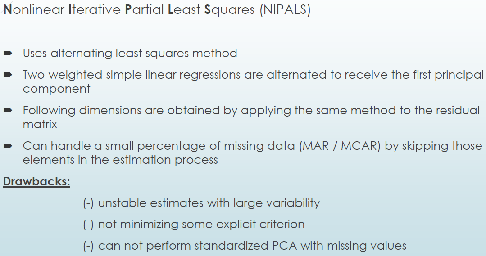
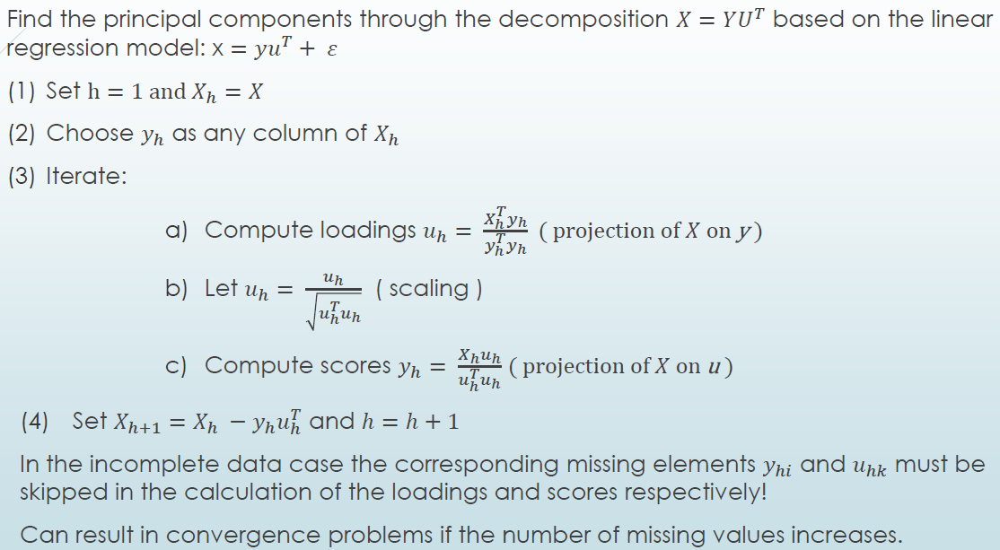
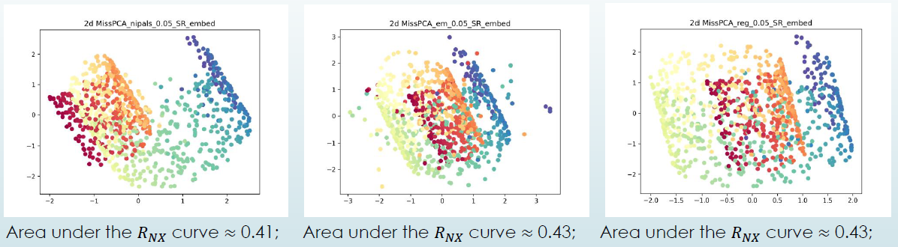
pca - non-linear extensions
-
üí° idea. map data into feature space, then apply pca
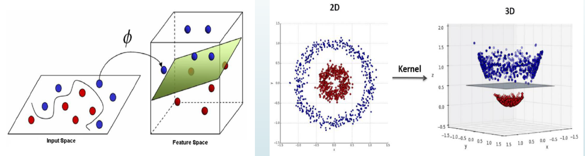 -
use kernel trick to make mapping feasible
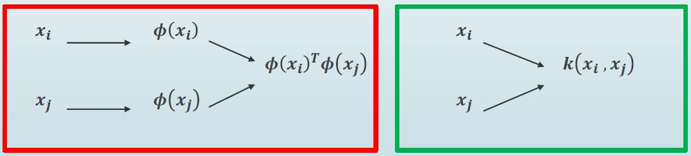 -
kernel.
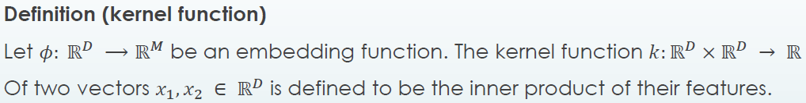 -
mercer's theorem.
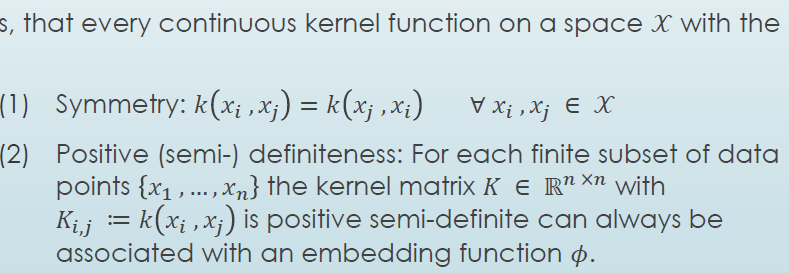

algorithm
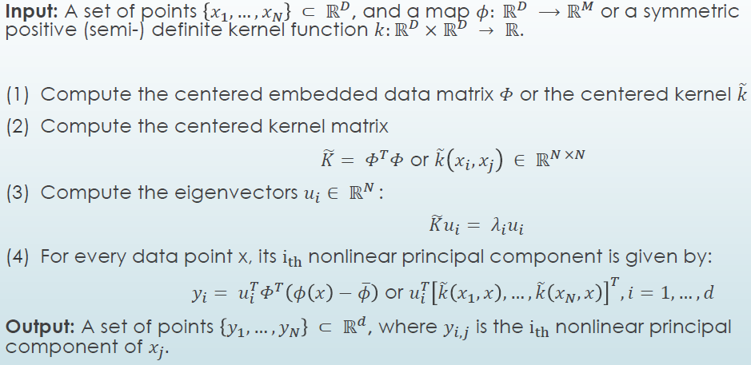
results
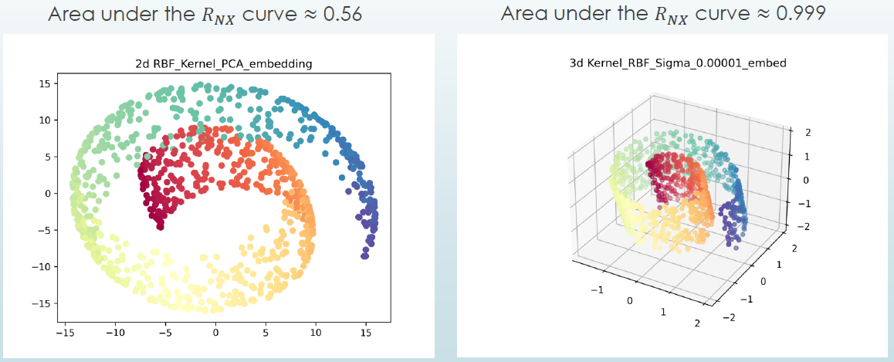

crucial: tuning of kernel parameters
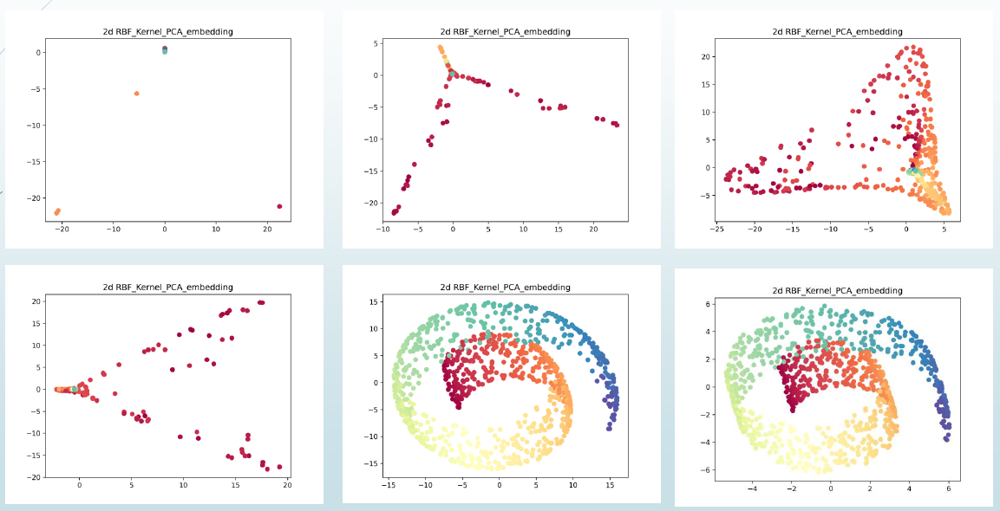
wrap-up

questions
questions alex might be expected to answer (to some extent, at least):
❓ why is pca not exact in the 3d embedding (p. 11)?
❓ in stating pca as a fixed-effects model, does \epsilon capture noise both in axes and loadings? i.e., errors in U as well as y?
❓ you say d may be found by cross validation (p. 18) - how so?
⭐ answer is in josse/husson (chapter 2.3), i think
❓ in iterative pca, why do we perform dimensionality reduction so early? wouldn't it be more reasonable to keep as much data as possible for imputation?
❓ why would the risk of overfitting in iterative pca increase with more noise in the data? noise can actually shown to be a regularizer afaik
⭐ answer is in josse/husson (chapter 3.1.4), i think
❓ what is the residual matrix in nipals?
questions for general discussion (maybe with input from supervisors):
❓ is shrinkage in regularized iterative pca not at odds with the goal of maximizing variance of the y_i?
❓ what is non-linear about nipals?
❓ would it be possible to first perform pca on the complete cases from \R^D, mapping them to \R^d, and then simply projecting the non-complete cases into that same space? at least if they have at least d non-missing entries? so the low-dimensional embedding is not "contaminated" by the incomplete cases?
❓ regarding the decision whether or not standard pca is sufficient: could we always just apply kernel pca to be "safe"? no, right? because the second we decide to go for a non-linear kernel such as rbf with fixed bandwidth, we cannot recover a linear mapping anymore?
❓ kernel pca, or the kernel trick in general, is a very powerful tool in theory as we are per se able to construct arbitrary feature maps. in practice, we will mostly resort to well-behaved and easy-to-compute kernels, such as rbf or polynomial kernels, again setting restrictions. does that not erode much of that power?
❓ regarding tuning, or virtually all decisions we need to make: how do we deal with the fact that unsupervised learning is so hard to evaluate? the AUC(R_{NX}), for instance, measures the degree of neighborhood preservation, but is is a well-known problem that neighborhood construction may be flawed, and becomes harder with increasing dimensionality. visual inspection for real-world data is hardly an option